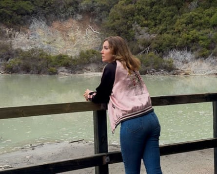
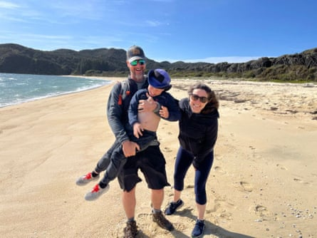

C alifornian Larry Keim has learned a thing or two in his 20 years living in New Zealand: good dill pickles are hard to come by, understanding kiwi slang will get you far, and if you think you’re going to get rich, forget it, “that ain’t gonna happen”.
“But [New Zealand] is rich in so many other things that, at the end of the day, matter more.”
For Americans looking to escape political division in the US or simply wishing for a slower pace of life, New Zealand is often considered an enticing alternative.
Political crises and administration changes in the US regularly ignite waves of American interest in New Zealand – visits to immigration websites skyrocket, property searches soar and online forums fill up with urgent questions about what life is like in the island nation. Billionaires have also looked to use New Zealand as a “bolthole” far away from the threat of societal turmoil.
Most recently, the relaxing of rules for New Zealand’s so-called “golden visas” to attract wealthy investors has seen a surge in applications from the US , including plenty – according to immigration consultants – driven by a desire to escape president Donald Trump’s administration.
So what advice would recent US migrants offer to their compatriots? Some themes emerged: relish the free healthcare, embrace the work culture and natural beauty but brace for high living costs and feelings of isolation.
Nurse and life coach Sarah Parlow moved from Los Angeles to New Zealand in January to escape Trump’s America.Photograph: Sarah Parlow
Sarah Parlow did not arrive on a “golden visa” but deliberately moved to New Zealand a week before Trump’s inauguration in January.
“When I saw the Republican party captured the House, the Senate and the presidency on election night, I just knew it would be disastrous for women’s rights, LGBT rights, and the American people in general,” Parlow says. “I just really wanted to be somewhere else for a while.”
The Auckland-based nurse and life coach says it has been an easy landing. “It’s been a place where I feel I can recalibrate”.
Stats NZ estimates 1,388 Americans migrated to New Zealand in the three months to the end of February, a jump of 1,127 on the same period a year earlier – 537 arrived in February alone, which is believed to be one of the highest monthly totals from the US on record.
However, Amy Armstrong, who moved to New Zealand with her husband, Miles Nolte, and son Beck in 2022, has a warning. “You should feel pulled to be here,” she said, “not just pushed to get away from [the US].”
Americans Amy Armstrong, Miles Nolte and their son Beck moved to New Zealand in 2022, mostly driven by a thirst for adventure and love of the outdoors.Photograph: Amy Armstrong
“I think it’s really easy coming from a place of feeling desperate in the United States right now, to assume that if you can get to New Zealand, it’s this golden parachute,” Nolte says, cautioning that not everything in New Zealand comes easy.
The couple arrived in New Zealand after Armstrong was awarded an Edmund Hillary Fellowship and they have just gained residency. Their move was partly motivated by the US’s political climate but mostly driven by a thirst for adventure and love of the outdoors.
In this respect, the country has been generous – the wild spaces are beautiful and accessible and there is a real sense of “community-mindedness”, Armstrong says.
But there have been shocks. The housing can be cold and getting a job is often about who you know, as much as what you know.
“The reality is, most people get jobs [here] based on knowing somebody,” says Nolte – an experienced writer, producer, hunter and fisher. “I have been a little shocked at how cloistered the market … and the connections have been.”
For Wellington-based video editor Sam, who wished to use only his first name, the workplace culture was a surprising discovery – one he relishes for the lengthy holiday periods and better work-life balance but which also required steep learning curves.
“In New Zealand, the relationships come first … if you’re in a position of leadership, you have to develop that relationship or it won’t work out,” says Sam.
Sam and his wife moved to New Zealand in 2016 after falling in love with its natural beauty three years earlier. He is particularly struck by how access to free healthcare “gives you more freedom and latitude to try new things”.
“That made me realise, as an American, how much of your life and the decisions you make are tied to your ability to get healthcare,” Sam said.
Some Americans warned would-be migrants that the cost of living is high in New Zealand compared with the US, and said they had sometimes struggled to form friendships with locals. Meanwhile, the distance between New Zealand and the US can lead to loneliness.
“Sometimes it can feel very isolating [if] you’re just here on your own and your family’s 3,000 miles away,” says Monique, who wished to give only her first name, and who moved to New Zealand in 2006.
Yet, not one regretted their choice to move, nor had any pressing desire to return to the US.
“I have a life here that I wouldn’t be able to have in California – I can afford to keep myself healthy [and] don’t have to pay for my prescriptions,” says Debbie, a retiree who has called New Zealand home since 2005. “New Zealand is a beautiful country and I am proud to be part of it.”